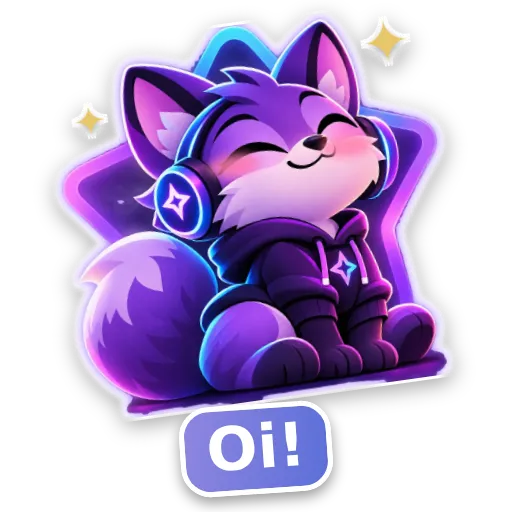
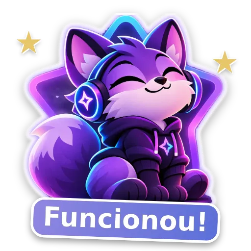
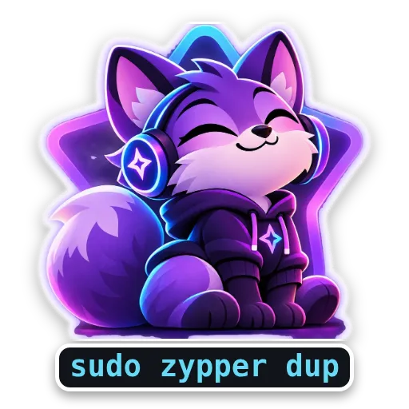

← Voltar para a Euri
WhatsApp
Figurinhas da Euri.
Dez figurinhas da mascote do Lyra OS para as suas conversas, do "Bom dia!" ao sudo zypper dup.



Telegram
- Toque em Adicionar no Telegram, no celular ou no computador.
- O Telegram abre o pacote "Euri — Lyra OS".
- Toque em Adicionar figurinhas. Pronto: elas aparecem no painel de figurinhas.
- Baixe o .zip e extraia as imagens.
- No WhatsApp Web ou no WhatsApp para computador, abra uma conversa (pode ser com você mesmo).
- Clique no ícone de emoji, vá em Figurinhas e depois em Criar.
- Escolha uma das imagens da Euri e envie.
- No celular, toque e segure a figurinha enviada e escolha Favoritar.
As figurinhas são livres para uso pessoal nas suas conversas. A Euri foi criada pelo time de design do Lyra OS.